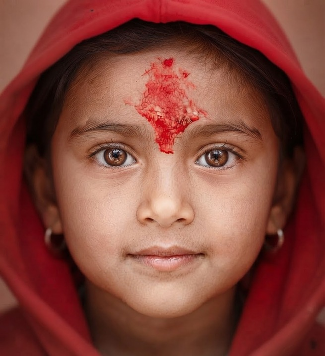

www.nepal.co.il
נפאל , גן העדן למטיילים
בחסות פלייאיסט נפאל
שירות, של מחלקה ראשונה - מחיר, הכי טוב בעיר.
הטיול הוא השמיית כמה כיף ניתן לעשות בנפאל. מצאו לכם מגוון אטרקציות ואפשרות טיולים לקבלת מידע חיוני אתר, חוללו להעסיק לקרואת וואטסאפ מקומית של ישראלים המטילים בנפאל.
ישנן אפשרויות לינה רבות בנפאל, ממלונות, גסט האוזות, ועד מלונות פאר אוהלים. ניתן למצוא אתר ונוות לינה, שמשאירים עבור כנו באמצעות האיטרופות לקרואת ווסטאפ מקומית של מטיילים ישראלים בנפאל.
על שיירות למטפסים ומטיילים מקצועיים לא מוותרים ובטח לא מתפשרים. קבלו ייעוץ והכוונה, בטוח בנוגע ואת המודיעין המדויק ביותר והשירות המעולה של פלייאיסט שיויע כבר שרות רכול נפאל.

* מנוסח בלשון זכר ומתייחס לנשים ולגברים כאחד.
טיול הרבה אחרי הצבא, לניילאי 40 פלוס / 50 פלוס / 60 פלוס ולמי שצעיר בנפשות / עם הפינוקים שנפאל יודעת לתת / נפאל כמו שלא ראית מעולם / רוחשים, טעימים, ריחות, צבעים והנאות / מתחילים באיסוף של כבוד משדה התעופה ומכאן, אנחנו יחד / עם ג'יפ מפואר וממוזג לאורך הטיול / חדרים נקיים, מאובזרים, ממוזגים ומפנקים, כדי שתוכל לישון טוב בלילה / צוות מקצועי ואמין שדאג שהטיול הזה יהיה חויה בלתי נשכחת / שף פרטי, כי הצבא צועד על כבתו / צלם מקצועי, כדי שלא תפספס את הרגע. את הסלפי תשאירו לנו ולכם נשאר רק להנות / חליפה לפי מידתך, בונים את הטיול לפי התקציב והדרישות שלך / ייעוץ מקצועי לכל אורך הטיול עוד הפתעות ואטרקציות מונגשות למידותיך, כדי שלא תפספס אף פעימה / מסוק לראש ההר / רפטינג / ספארי / ראפטינג / ועוד ברכותיו ואטרקציות מיוחדות לכל עונות השנה.
מסלול הלנגטנג הינו מסלול מדהים על רכס הר ההימלאיה, החושף אותנו במספר ימים מועט לנו רב גווני קאשיה, קשה במיוחד במספר ימים מועט לנו רב גווני קאשיה, יערות טחוס ירוקים, הררות עוצמתיות וחזקים, פסגת מושלגות, כפרים אותנטיים ואנשים רוחביים שחיים פשוטים ושלמים. המסלול נמצא כולו בעמק הלנגטנג - עמק נמרי השלג, שבו ישנם פרפרים, ציפורים ומגוון חיות עצום ייחודי לאזור לד. רוסוף, לאורך המסלול ועבור דרך כפרים הופגעו בשנת 2015, וביניהם הגפר לננגטנג - כפר הנקבר כולו מתחת סולות סלעים ושלג וכעת נבנה מחדש ומנסה לאחות את השברים מהסערדריה. משך הטיול: 8 ימים. דרגת קושי: המסלול בדרגת קושי בינונית. מתאים לחוב - המטיילים ולמשפחות.
טראק האגמים הקפואים הינו אחד הטראקים המיוחדים ביותר בנפאל - בזמן קצץ מאוז ורגע קושי פשוטו, ביטוח להתאפקות אחרי על רכס הר ההימלאיה אנחנו נחשפים לחופים ולמסוע העשמתי של רפאל על כל גווניו - יערות ירוקים, אגמים גדולים מדהימים, פסגות והרים לבנים, כפרים אותנטיים ואנשים רוחניים ושמחים. טראק מומלץ ביותר למשפחות ולמטיילים בכל הרמות הרוצים לחוות את נפאל והרי ההימלאיה בזמן קצר יחסית. משך הטיול: 7 ימים. דרגת קושי: המסלול בדרגת קושי בינונית. מתאים לרובי המטיילים ולמשפחות.
על שיירות הירם אנפורנה והאוורסט על שירו את למטפסים ומטיילים מקצועיים לא מוותרים ובטח לא מתפשרים קבלו ייעוץ והכוונה, בטוח בנוגע ואת המודיעין המדויק ביותר והשירות המעולה של פלייאיסט שיוע כבר שרות רכול נפאל משך הטיול: 12 ימים. דרגת קושי: המסלול מתמשך ובדרגת קושי בינונית. בהחלט מתאים לדור המטיילים ולמשפחות.